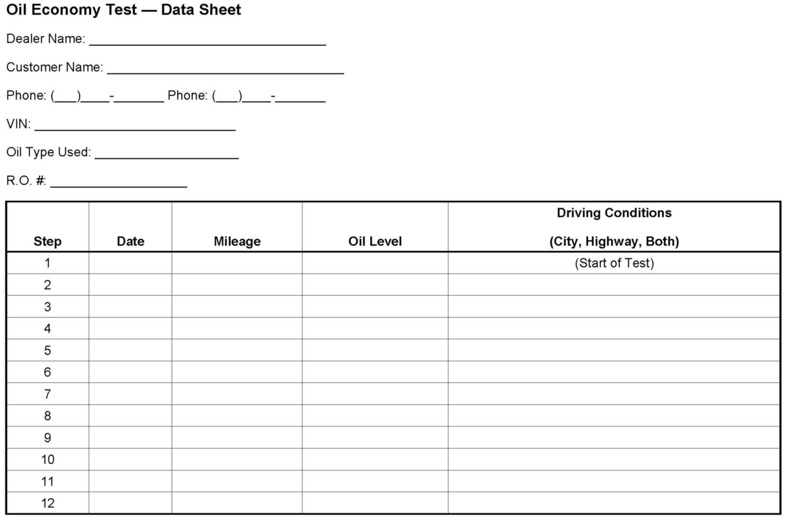

Gasoline Engine - Oil Consumption Guidelines
INFORMATIONBulletin No.: 01-06-01-011E
Date: December 18, 2008
Subject:
Information on Engine Oil Consumption Guidelines
Models:
1998-2009 GM Passenger Cars and Gasoline Powered Light Duty Trucks Under 8500 LB GVW (Including Saturn)
2003-2009 HUMMER H2
2006-2009 HUMMER H3
2005-2009 Saab 9-7X
Supercede:
This bulletin is being revised to update model years. Please discard Corporate Bulletin Number 01-06-01-011D (Section 06 - Engine/Propulsion System).
All engines require oil to lubricate and protect the load bearing and internal moving parts from wear including cylinder walls, pistons and piston rings. When a piston moves down its cylinder, a thin film of oil is left on the cylinder wall. During the power stroke, part of this oil layer is consumed in the combustion process. As a result, varying rates of oil consumption are accepted as normal in all engines.
Oil Consumption
The accepted rate of oil consumption for engines used in the vehicles referenced is 0.946 liter (1 qt) in 3200 km (2000 mi).
Important:
Certain models have a new GM Extended Warranty. Please refer to the appropriate Owner's Manual for warranty information.
This rate only applies to personal use vehicles, under warranty, that are driven in a non-aggressive manner and maintained in accordance with the appropriate maintenance schedule, with less than 58,000 km (36,000 mi), or 80,450 km (50,000 mi) for Cadillac, driven at legal speeds in an unloaded (for trucks) condition.
Important:
This rate does not apply to vehicles that are driven in an aggressive manner, at high RPM, high speeds, or in a loaded condition (for trucks). Oil consumption for vehicles driven under these conditions will be more.
Many factors can affect a customer's concern with oil consumption. Driving habits and vehicle maintenance vary from owner to owner. Thoroughly evaluate each case before deciding whether the vehicle in question has abnormal engine oil consumption.
Gasket and External Leaks
Inspect the oil pan and engine covers for leakage due to over-tightened, damaged, or out of place gaskets. Inspect oil lines and fittings for signs of leakage.
Improper Reading of the Oil Level Indicator (Dipstick)
Verify that the dipstick tube is fully seated in the block. When checking the oil level, make sure the dipstick is wiped clean before taking an oil level reading and fully depress the dipstick until the shoulder bottoms out on the dipstick tube. The dipstick should be the proper part number for the engine/vehicle that is being checked.
Notice:
Operating your vehicle with an oil level that is below the minimum level indicated on the engine oil dipstick can result in severe engine damage. Repairs resulting from operating an engine with insufficient oil are not covered under the terms of the New Vehicle Warranty.
Important:
Refer to Owner Manual in SI for checking and adding engine oil.
Not Waiting Long Enough After Running Engine to Check Oil Level
Some engines require more time than others for the oil to drain back into the crankcase. To assure a sufficient amount of oil has drained back to the crankcase, and an accurate reading can be obtained, the vehicle should be allowed to sit for at least 15 minutes, after the engine has been shut off, before taking an oil level reading. In order to ensure accurate results, the temperature of the oil should be close to the same temperature as the last time the oil level was checked.
Important:
This does not apply to some Corvette ZO6 equipped with the 7.0L LS7 engine (dry sump). Follow the instructions in the Owner's Manual for checking the oil in this application.
Improper Oil Fill After an Oil Change
Following an oil change, verify that the proper amount and type of oil was put in the engine and that the oil level on the dipstick is not above the full mark or below the add marks. Refer to the Owner's Manual or Service Manual for information on recommended oil quantity, viscosity, and quality.
Aggressive Driving, High Speed or High RPM Driving
Aggressive driving and/or continuous driving at high speeds/high RPMs will increase oil consumption. Because this may not always be an everyday occurrence, it is hard to determine exactly how much the oil economy will be affected.
A higher rate of oil consumption is normal for vehicles equipped with manual transmissions that are driven aggressively. By "aggressive," we mean operation at high RPM (3,000 RPM to redline), with frequent use of engine braking (using the engine to slow the vehicle). Vehicles that are driven aggressively may consume engine oil at a rate of up to 0.946 L (1 quart) every 805 km (500 mi). This is normal for a vehicle that is driven aggressively. No repair is necessary. This characteristic does, however, require the owner to check the engine oil level at sufficiently frequent intervals, especially when driving aggressively, to assure the oil level remains within the recommended operating range. As the Owner's Manual recommends, you should check the oil level every time you get fuel.
Towing or Heavy Usage
Towing a trailer will increase oil consumption and may cause oil consumption to fall below the normal accepted rate referenced in this bulletin for an unloaded vehicle in a personal use application. Large frontal area trailers will further increase the work required from the engine, especially at highway speeds, and thus increases the rate of oil consumption.
Crankcase Ventilation System
Verify that the positive crankcase ventilation (PCV) system is operating properly. Blockages, restrictions, or damage to the PCV system can result in increased oil use.
Oil Dilution (Fuel and Water)
On vehicles that are usually driven short distances, less than 8 km (5 mi), especially in colder weather, unburned fuel and condensation generated from cold engine operation may not get hot enough to evaporate out of the oil. When this occurs, the dipstick may indicate that the oil level is over-full. Subsequent driving on a trip of sufficient length to enable normal engine operating temperature for 30 minutes or more, in order to vaporize excess moisture and fuel, may give the customer the impression of excessive oil consumption.
Engine Temperature
If an engine is run at overheated temperatures (see Owner's Manual or Service Manual) for more than brief periods, oil will oxidize at a faster than normal rate. In addition, gaskets may distort, piston rings may stick, and excessive wear may result. Verify that all cooling system components are in proper working order.
Engine Wear
Piston scuffing, excessive piston-to-wall clearance, tapered or out of round cylinders, worn, damaged or improperly installed valve guides, seals and piston rings will all cause an increase in oil consumption.
Measurement of Oil Consumption
Engines require a period of time to BREAK IN so that moving parts are properly seated. Therefore, oil economy should not be tested until the vehicle has accumulated at least 6400 km (4000 mi). An exception would be allowed only if an engine is reported to be using more than 0.946 liter (1 qt) in 1600 km (1000 mi).
1. Verify that the engine has no external leaks. Repair as necessary.
2. Verify that the engine is at normal operating temperature (see Owner's Manual or Service Manual).
3. Park the vehicle on a level surface.
4. Wait at least 15 minutes, after the engine is shut off, before checking the oil level to make sure that the oil has had time to drain back into the crankcase.
5. Verify that the oil level is at, but not above, the full mark on the dipstick, and that the proper viscosity and quality oil are being used as recommended in the Owner's Manual.

6. Record the vehicle mileage, date, and exact oil level on the form shown above.
7. Ask the customer to verify the oil level, each time the vehicle is fueled, following steps 16 and return the vehicle to the dealership if the oil level is found at or below the add mark, 0.946 liter (1 qt) low. If the oil level remains above the add mark, the customer should continue to operate the vehicle and verify the engine oil level until 3200 km (2000 mi) has accumulated before returning to the dealership for a final evaluation.
8. If the final evaluation shows that the engine uses more than 0.946 liter (1 qt) in 3200 km (2000 mi), follow the published symptom diagnostics as described in the appropriate Service Manual. If the oil consumption test shows that the engine uses less than 0.946 liter (1 qt) in 3200 km (2000 mi), explain to the customer that their engine meets the guidelines for oil consumption.

Disclaimer